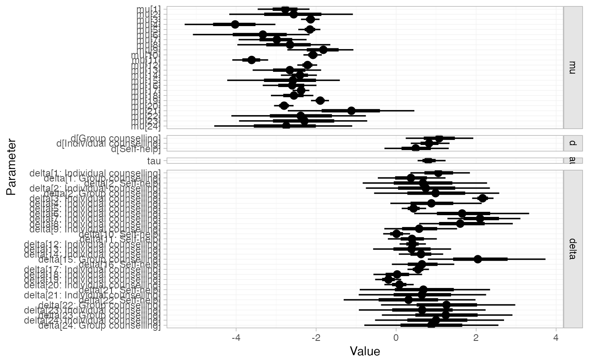
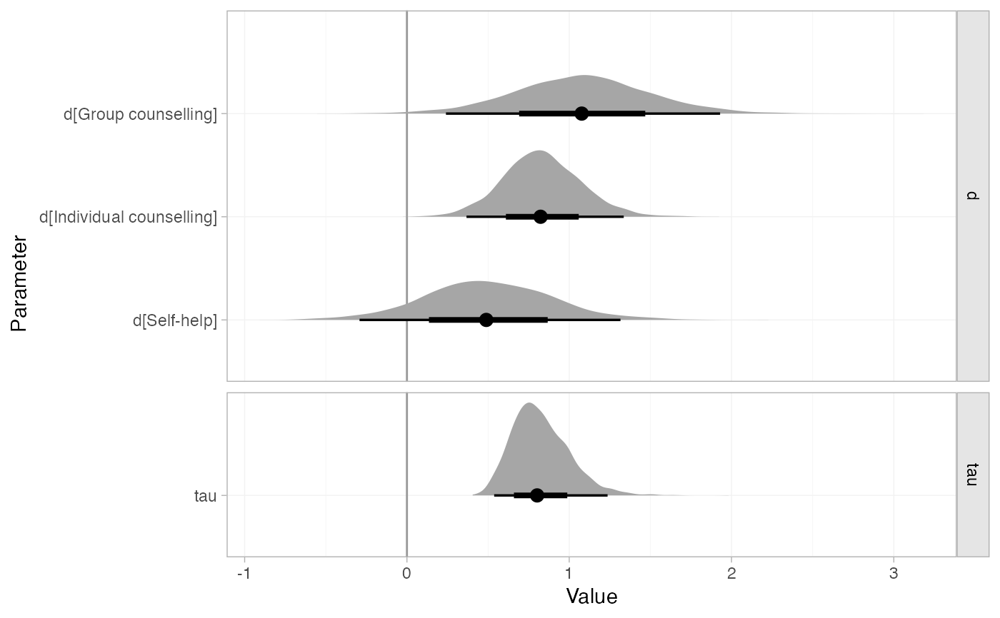

Posterior summaries of model parameters in stan_nma objects may be produced
using the summary() method and plotted with the plot() method. NOTE: To
produce relative effects, absolute predictions, or posterior ranks, see
relative_effects(), predict.stan_nma(), posterior_ranks(),
posterior_rank_probs().
# S3 method for stan_nma summary(object, ..., pars, include, probs = c(0.025, 0.25, 0.5, 0.75, 0.975)) # S3 method for stan_nma plot( x, ..., pars, include, stat = "pointinterval", orientation = c("horizontal", "vertical", "y", "x"), ref_line = NA_real_ )
Arguments
| ... | Additional arguments passed on to other methods |
|---|---|
| pars, include | See |
| probs | Numeric vector of specifying quantiles of interest, default
|
| x, object | A |
| stat | Character string specifying the |
| orientation | Whether the |
| ref_line | Numeric vector of positions for reference lines, by default no reference lines are drawn |
| summary | Logical, calculate posterior summaries? Default |
Value
A nma_summary object
Details
The plot() method is a shortcut for plot(summary(stan_nma)). For
details of plotting options, see plot.nma_summary().
See also
plot.nma_summary(), relative_effects(), predict.stan_nma(),
posterior_ranks(), posterior_rank_probs()
Examples
## Smoking cessation # \donttest{ # Run smoking RE NMA example if not already available if (!exists("smk_fit_RE")) example("example_smk_re", run.donttest = TRUE) # } # \donttest{ # Summary and plot of all model parameters summary(smk_fit_RE)#> mean sd 2.5% 25% 50% 75% 97.5% #> mu[1] -2.78 0.32 -3.44 -2.99 -2.77 -2.56 -2.18 #> mu[2] -2.57 0.77 -4.12 -3.05 -2.56 -2.06 -1.08 #> mu[3] -2.15 0.12 -2.39 -2.23 -2.14 -2.06 -1.91 #> mu[4] -4.04 0.56 -5.23 -4.39 -4.01 -3.65 -3.04 #> mu[5] -2.16 0.14 -2.43 -2.25 -2.15 -2.06 -1.89 #> mu[6] -3.41 0.71 -4.96 -3.84 -3.35 -2.91 -2.21 #> mu[7] -3.03 0.45 -3.98 -3.32 -2.99 -2.71 -2.24 #> mu[8] -2.69 0.59 -3.98 -3.05 -2.66 -2.29 -1.66 #> mu[9] -1.84 0.41 -2.69 -2.11 -1.82 -1.56 -1.09 #> mu[10] -2.08 0.12 -2.33 -2.16 -2.08 -2.00 -1.85 #> mu[11] -3.62 0.23 -4.09 -3.76 -3.61 -3.46 -3.19 #> mu[12] -2.22 0.13 -2.48 -2.30 -2.21 -2.13 -1.97 #> mu[13] -2.67 0.45 -3.63 -2.96 -2.65 -2.36 -1.85 #> mu[14] -2.41 0.22 -2.87 -2.55 -2.40 -2.26 -1.99 #> mu[15] -2.69 0.74 -4.29 -3.14 -2.60 -2.16 -1.47 #> mu[16] -2.62 0.35 -3.36 -2.84 -2.61 -2.37 -1.96 #> mu[17] -2.38 0.11 -2.59 -2.45 -2.38 -2.30 -2.17 #> mu[18] -2.56 0.27 -3.12 -2.74 -2.56 -2.37 -2.03 #> mu[19] -1.90 0.12 -2.13 -1.98 -1.90 -1.82 -1.67 #> mu[20] -2.80 0.12 -3.05 -2.88 -2.80 -2.72 -2.57 #> mu[21] -1.12 0.82 -2.77 -1.64 -1.11 -0.59 0.47 #> mu[22] -2.39 0.84 -4.17 -2.92 -2.38 -1.84 -0.81 #> mu[23] -2.33 0.82 -4.00 -2.85 -2.31 -1.79 -0.72 #> mu[24] -2.80 0.86 -4.53 -3.36 -2.80 -2.24 -1.12 #> d[Group counselling] 1.10 0.45 0.26 0.80 1.09 1.37 2.07 #> d[Individual counselling] 0.83 0.24 0.38 0.68 0.83 0.99 1.34 #> d[Self-help] 0.49 0.41 -0.29 0.22 0.49 0.75 1.32 #> tau 0.84 0.19 0.54 0.71 0.82 0.95 1.26 #> delta[1: Individual counselling] 1.07 0.38 0.35 0.82 1.07 1.32 1.83 #> delta[1: Group counselling] 0.37 0.43 -0.47 0.08 0.36 0.65 1.20 #> delta[2: Self-help] 0.67 0.80 -0.91 0.15 0.67 1.17 2.28 #> delta[2: Individual counselling] 0.75 0.77 -0.76 0.25 0.75 1.25 2.32 #> delta[2: Group counselling] 0.98 0.78 -0.51 0.47 0.97 1.48 2.58 #> delta[3: Individual counselling] 2.17 0.15 1.89 2.07 2.17 2.27 2.46 #> delta[4: Individual counselling] 0.90 0.57 -0.17 0.51 0.88 1.26 2.07 #> delta[5: Individual counselling] 0.44 0.15 0.15 0.33 0.44 0.53 0.75 #> delta[6: Individual counselling] 1.71 0.72 0.44 1.21 1.66 2.14 3.24 #> delta[7: Individual counselling] 2.14 0.48 1.29 1.80 2.10 2.46 3.16 #> delta[8: Individual counselling] 1.64 0.60 0.55 1.23 1.60 2.01 2.95 #> delta[9: Individual counselling] 0.59 0.45 -0.27 0.29 0.58 0.88 1.49 #> delta[10: Self-help] 0.01 0.17 -0.33 -0.11 0.01 0.12 0.35 #> delta[11: Self-help] 0.41 0.31 -0.21 0.20 0.41 0.61 1.02 #> delta[12: Individual counselling] 0.41 0.16 0.09 0.30 0.41 0.52 0.73 #> delta[13: Individual counselling] 0.39 0.51 -0.59 0.05 0.38 0.72 1.40 #> delta[14: Individual counselling] 0.62 0.28 0.08 0.44 0.61 0.80 1.17 #> delta[15: Group counselling] 2.15 0.78 0.76 1.61 2.09 2.63 3.87 #> delta[16: Self-help] 0.65 0.41 -0.13 0.37 0.65 0.91 1.46 #> delta[17: Individual counselling] 0.55 0.14 0.27 0.46 0.55 0.64 0.82 #> delta[18: Individual counselling] 0.02 0.31 -0.58 -0.19 0.02 0.25 0.63 #> delta[19: Individual counselling] -0.20 0.17 -0.53 -0.31 -0.20 -0.08 0.11 #> delta[20: Individual counselling] 0.08 0.18 -0.28 -0.04 0.08 0.21 0.43 #> delta[21: Self-help] 0.68 0.82 -0.93 0.14 0.67 1.20 2.34 #> delta[21: Individual counselling] 0.64 0.81 -0.97 0.13 0.64 1.15 2.23 #> delta[22: Self-help] 0.31 0.83 -1.31 -0.23 0.30 0.85 2.06 #> delta[22: Group counselling] 1.27 0.84 -0.32 0.73 1.26 1.78 3.02 #> delta[23: Individual counselling] 0.68 0.80 -0.93 0.17 0.68 1.18 2.31 #> delta[23: Group counselling] 1.28 0.83 -0.36 0.76 1.26 1.80 2.97 #> delta[24: Individual counselling] 1.04 0.82 -0.54 0.49 1.02 1.55 2.71 #> delta[24: Group counselling] 0.88 0.85 -0.78 0.32 0.88 1.43 2.59 #> Bulk_ESS Tail_ESS Rhat #> mu[1] 4581 3243 1 #> mu[2] 2141 2232 1 #> mu[3] 8240 2589 1 #> mu[4] 3390 2754 1 #> mu[5] 7000 3156 1 #> mu[6] 2688 1915 1 #> mu[7] 3546 2292 1 #> mu[8] 2931 2143 1 #> mu[9] 4410 3120 1 #> mu[10] 8553 2547 1 #> mu[11] 7716 2962 1 #> mu[12] 7184 2940 1 #> mu[13] 4994 2863 1 #> mu[14] 4958 2751 1 #> mu[15] 2939 2372 1 #> mu[16] 4969 2814 1 #> mu[17] 8431 2930 1 #> mu[18] 5979 3307 1 #> mu[19] 7209 3186 1 #> mu[20] 7294 2934 1 #> mu[21] 2759 2646 1 #> mu[22] 2632 2320 1 #> mu[23] 2595 2215 1 #> mu[24] 2799 2746 1 #> d[Group counselling] 1642 2079 1 #> d[Individual counselling] 1136 1797 1 #> d[Self-help] 1804 2167 1 #> tau 1143 2309 1 #> delta[1: Individual counselling] 4333 3448 1 #> delta[1: Group counselling] 4873 3282 1 #> delta[2: Self-help] 2245 2484 1 #> delta[2: Individual counselling] 2257 2518 1 #> delta[2: Group counselling] 2190 2286 1 #> delta[3: Individual counselling] 6398 3188 1 #> delta[4: Individual counselling] 3542 2795 1 #> delta[5: Individual counselling] 6686 3300 1 #> delta[6: Individual counselling] 2649 2017 1 #> delta[7: Individual counselling] 3379 2619 1 #> delta[8: Individual counselling] 2772 2150 1 #> delta[9: Individual counselling] 4261 3157 1 #> delta[10: Self-help] 5546 3135 1 #> delta[11: Self-help] 5445 3576 1 #> delta[12: Individual counselling] 6195 3419 1 #> delta[13: Individual counselling] 4400 2740 1 #> delta[14: Individual counselling] 5444 2742 1 #> delta[15: Group counselling] 2638 2244 1 #> delta[16: Self-help] 4921 3155 1 #> delta[17: Individual counselling] 6195 3492 1 #> delta[18: Individual counselling] 5728 3350 1 #> delta[19: Individual counselling] 5386 3808 1 #> delta[20: Individual counselling] 5552 3690 1 #> delta[21: Self-help] 2740 2781 1 #> delta[21: Individual counselling] 2676 2569 1 #> delta[22: Self-help] 2624 2560 1 #> delta[22: Group counselling] 2602 2338 1 #> delta[23: Individual counselling] 2686 2656 1 #> delta[23: Group counselling] 2593 2032 1 #> delta[24: Individual counselling] 2899 2837 1 #> delta[24: Group counselling] 2877 2729 1#> mean sd 2.5% 25% 50% 75% 97.5% Bulk_ESS Tail_ESS Rhat #> tau 0.84 0.19 0.54 0.71 0.82 0.95 1.26 1143 2309 1# }